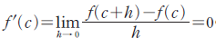

열린구간 (a, b)에 속하는 모든 c에서 f'(c)=0이다.
2) x=c에서 최댓값 f(c)를 가진다면 절댓값이 충분히 작은 0이 아닌 실수 h에 대하여
h가 양수이면
 , h가 음수이면
, h가 음수이면  이다.
이다.
3) 그런데 함수 f(x)는 x=c에서 미분가능하므로 좌극한과 우극한이 같아야한다.
즉,


4) 따라서 이다. 같은방법으로 x=c에서 최솟값을 가질 때에도 f'(c)=0임을 보일 수 있다.
함수 f(x)가 닫힌구간 [a, b]에서 연속이고 열린구간 (a, b)에서 미분가능할 때, f(a)=f(b)이면 f'(c)=0인 c가 a와 b사이에 적어도 하나 존재한다.
, h가 음수이면
이다.